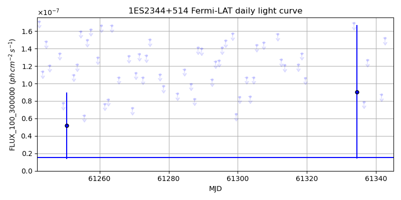
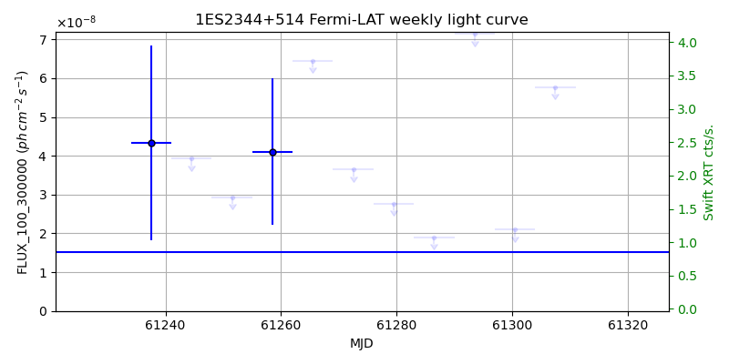
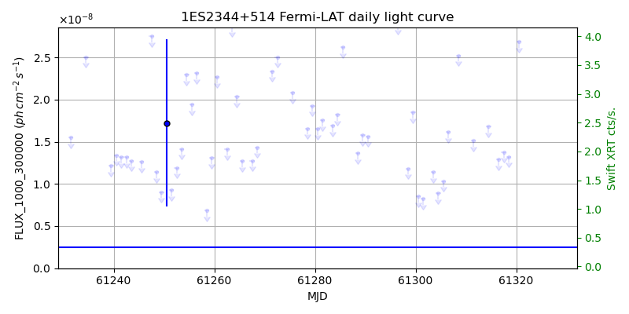
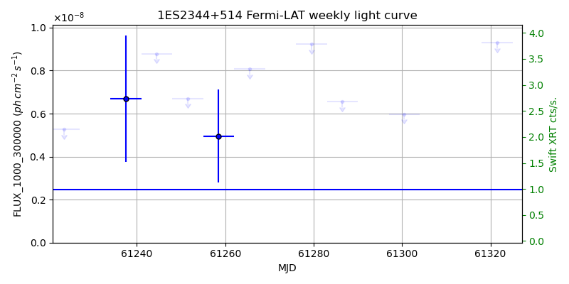

LAT Lightcurve site: https://fermi.gsfc.nasa.gov/ssc/data/access/lat/msl_lc/source/1ES_2344p514
Swift site: https://www.swift.psu.edu/monitoring/source.php?source=1ES2344+514
NED: Query
Time of last update of this page: UT: 2026-10-17 15:31 (MJD: 61330.647)
| Property | Value |
|---|---|
| R.A. | 23:47:04.80 |
| Dec. | 51:42:18.0 |
| z | 0.044 |
| 3FGL SpectrumType | PowerLaw |
| 3FGL PL Index | 1.78 |
| 3FGL Flux_100_300000 | 1.51e-08 1 / (s cm2) |
| 3FGL Flux_1000_300000 | 2.46e-09 1 / (s cm2) |
| 3FGL Flux >200 GeV | 3.83e-11 1 / (s cm2) |
| 3FGL Extrap. Crab >200 GeV | 0.16 |
| 3FGL Flux After EBL Absorption >200GeV | 2.94e-11 1 / (s cm2) |
| 3FGL EBL Crab Fraction >200GeV | 0.12 |

| MJD | dMJD | Flux | dFlux | Frac3FGL | FracCrab>200GeV | EBLFracCrab>200GeV |
|---|---|---|---|---|---|---|
| 61325.50 | 0.50 | 7.25e-07 | 0.00e+00 | 0.00 | 0.00 | 0.00 |
| 61326.50 | 0.50 | 1.14e-06 | 0.00e+00 | 0.00 | 0.00 | 0.00 |
| 61327.50 | 0.50 | 1.74e-06 | 0.00e+00 | 0.00 | 0.00 | 0.00 |
| 61328.50 | 0.50 | 1.26e-06 | 0.00e+00 | 0.00 | 0.00 | 0.00 |
| 61329.50 | 0.50 | 1.33e-05 | 0.00e+00 | 0.00 | 0.00 | 0.00 |

| MJD | dMJD | Flux | dFlux | Frac3FGL | FracCrab>200GeV | EBLFracCrab>200GeV |
|---|---|---|---|---|---|---|
| 61293.50 | 3.50 | 7.14e-08 | 0.00e+00 | 0.00 | 0.00 | 0.00 |
| 61300.50 | 3.50 | 2.09e-08 | 0.00e+00 | 0.00 | 0.00 | 0.00 |
| 61307.50 | 3.50 | 5.77e-08 | 0.00e+00 | 0.00 | 0.00 | 0.00 |
| 61314.50 | 3.50 | 7.61e-08 | 0.00e+00 | 0.00 | 0.00 | 0.00 |
| 61321.50 | 3.50 | 1.00e-07 | 0.00e+00 | 0.00 | 0.00 | 0.00 |

| MJD | dMJD | Flux | dFlux | Frac3FGL | FracCrab>200GeV | EBLFracCrab>200GeV |
|---|---|---|---|---|---|---|
| 61325.50 | 0.50 | 4.70e-08 | 0.00e+00 | 0.00 | 0.00 | 0.00 |
| 61326.50 | 0.50 | 5.72e-08 | 0.00e+00 | 0.00 | 0.00 | 0.00 |
| 61327.50 | 0.50 | 1.66e-07 | 0.00e+00 | 0.00 | 0.00 | 0.00 |
| 61328.50 | 0.50 | 7.16e-07 | 0.00e+00 | 0.00 | 0.00 | 0.00 |
| 61329.50 | 0.50 | 1.97e-06 | 0.00e+00 | 0.00 | 0.00 | 0.00 |

| MJD | dMJD | Flux | dFlux | Frac3FGL | FracCrab>200GeV | EBLFracCrab>200GeV |
|---|---|---|---|---|---|---|
| 61293.50 | 3.50 | 1.82e-08 | 0.00e+00 | 0.00 | 0.00 | 0.00 |
| 61300.50 | 3.50 | 5.98e-09 | 0.00e+00 | 0.00 | 0.00 | 0.00 |
| 61307.50 | 3.50 | 1.47e-08 | 0.00e+00 | 0.00 | 0.00 | 0.00 |
| 61314.50 | 3.50 | 1.39e-08 | 0.00e+00 | 0.00 | 0.00 | 0.00 |
| 61321.50 | 3.50 | 9.29e-09 | 0.00e+00 | 0.00 | 0.00 | 0.00 |
--------------------------------------------------------- Using user-supplied coords: 23:47:04.80 51:42:18.0 2000 --------------------------------------------------------- FLWO UT night of: 2026-10-18 Local Sid. @ Midnight: 01:23 Sunset (-15.0) (local, UT): 18:56 01:56 Sunrise (-15.0) (local, UT): 05:22 12:22 Moonrise (local, UT): Moonset (local, UT): 22:59 05:59 Moon phase: 0.47 --------------------------------------------------------- AzTime LSID UT Obj_el Obj_az Mn_el Mn_az Sep. --------------------------------------------------------- 18:56 20:18 01:56 47.2 46.1 30.5 195.3 97.5 19:26 20:48 02:26 51.8 44.8 28.5 202.5 97.4 19:56 21:18 02:56 56.2 42.3 25.9 209.3 97.3 20:26 21:48 03:26 60.3 38.4 22.6 215.6 97.1 20:56 22:19 03:56 64.1 32.4 18.8 221.3 96.9 21:26 22:49 04:26 67.1 23.9 14.5 226.6 96.8 21:56 23:19 04:56 69.1 12.7 9.9 231.4 96.6 22:26 23:49 05:26 69.8 359.6 5.0 235.7 96.4 22:56 00:19 05:56 69.0 346.6 0.2 239.8 96.2 23:26 00:49 06:26 66.9 335.5 -5.5 243.5 96.0 23:56 01:19 06:56 63.9 327.2 -11.3 247.0 95.8 00:26 01:49 07:26 60.1 321.3 -17.0 250.4 95.6 00:56 02:19 07:56 55.9 317.5 -22.8 253.6 95.4 01:26 02:49 08:26 51.5 315.1 -28.7 256.7 95.1 01:56 03:19 08:56 46.9 313.9 -34.7 259.8 94.9 02:26 03:49 09:26 42.3 313.5 -40.7 263.0 94.7 02:56 04:20 09:56 37.7 313.7 -46.8 266.4 94.4 03:26 04:50 10:26 33.1 314.5 -52.8 270.1 94.2 03:56 05:20 10:56 28.6 315.8 -58.9 274.3 93.9 04:26 05:50 11:26 24.2 317.4 -64.9 279.6 93.7 04:56 06:20 11:56 19.9 319.4 -70.8 287.0 93.5 05:22 06:46 12:22 16.4 321.5 -75.7 297.1 93.2 --------------------------------------------------------- Dark hours >55 deg.: 2.05 srcstart (UT): 2026-10-18 05:59 srcend (UT): 2026-10-18 08:02